一般方程只用了函数的零点，微分方程用了它的每一个值：从"根"到"流"的十张图
之前在《为什么 AI、数学顶尖人才都绕不开数学分析？》里讲过两件事： 一般方程求的是"数"，微分方程求的是"函数"；解微分方程就是一个
for循环。这篇不再重复这些，而是回答一个更具体的问题：
你在中学学过的每一个"解方程"的概念——根、重根、判别式、韦达定理、方程组、迭代求根—— 到了微分方程里，分别变成了什么？
答案是：它们一个都没有消失，每一个都换了身份继续工作。 根变成了平衡点，判别式变成了分岔，
Ax = b变成了相图，韦达定理画出了一张"命运地图"， 牛顿迭代本身就是一个动力系统，而学习率不能超过2/λ，其实是一个一元一次不等式。全文 10 张图 + 1 个动画，都由
scripts/equations_to_ode_visualization.py生成， 正文代码片段都能直接运行（numpy / scipy）。
0. 一句话主线
拿同一个函数 f(y)，可以问两个问题：
一般方程： f(y) = 0 哪些 y 让 f 等于 0？
微分方程： y' = f(y) 如果 f(y) 是 y 的变化速度，y 会怎么走？
第一个问题只用了 f 的零点；第二个问题用了 f 在每一点的值和正负。 所以：
微分方程不是另起炉灶，而是把一般方程丢掉的信息捡了回来。 一般方程的根，是微分方程轨迹的终点和分水岭。
下面这张对照表是全文的目录。每一行后面都有一节和一张图：
| 一般方程里的概念 | 微分方程里的化身 | 节 |
|---|---|---|
根 f(y*) = 0 |
平衡点：系统停下来的地方 | §1 |
根处的斜率 f'(y*) |
稳定性：被吸过去还是被推开 | §1 |
| 牛顿迭代求根 | 连续牛顿流：求根本身就是一个动力系统 | §2 |
| 判别式、根的个数 | 分岔：参数一变，系统的命运突变 | §3 |
方程组 Ax = b |
线性系统 x' = Ax：六种相图 |
§4 |
| 韦达定理 + 判别式 | 迹-行列式平面：所有二维线性系统的分类图 | §5 |
| 一元二次方程的复根 | 振动：虚部是频率，实部是衰减 | §6 |
代数曲线 H(x, y) = E |
守恒量：非线性方程被压回一条曲线 | §7 |
| 分母为零（极点） | 有限时间爆破 | §8 |
等比数列收敛条件 |q| < 1 |
数值稳定性 = 学习率上限 | §9 |
| （没有对应） | 混沌：代数的尽头 | §10 |
1. 根 → 平衡点，斜率 → 稳定性
先看一个有真实背景的例子：Allee 效应。很多物种（比如需要集体防御的鱼群）数量太少时反而会灭绝， 因为找不到配偶、无法抱团。它的模型是：
y' = f(y) = r·y·(y/A − 1)·(1 − y/K)
- 按一般方程的思路：解
f(y) = 0，得到三个根0, A, K。答完了。 - 按微分方程的思路：这三个根只是开始，关键是根与根之间 f 的正负。
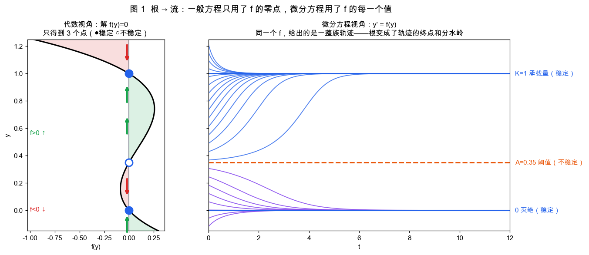
左图把 f(y) 横过来画：绿色区域 f > 0，y 往上走；红色区域 f < 0，y 往下走。
箭头一画，三个根的"性格"就出来了：
y = 0：上下的箭头都指向它 → 稳定（灭绝是一个吸引子）y = A：上下的箭头都背离它 → 不稳定（这是一道分水岭）y = K：两边都指向它 → 稳定（承载量）
右图是真实的解曲线：初值在 A 以上的全部长到 K，在 A 以下的全部灭绝。
一般方程告诉你"可能停在哪"，微分方程告诉你"到底停在哪"。
判断稳定性不用画图，只需要一个导数：
import numpy as np
r, A, K = 1.2, 0.35, 1.0
# f(y) = r·y·(y/A − 1)·(1 − y/K)，展开成多项式
f = np.poly1d([r, 0]) * np.poly1d([1 / A, -1]) * np.poly1d([-1 / K, 1])
df = f.deriv()
for y in sorted(f.roots.real):
print(f"y* = {y:.2f} f'(y*) = {df(y):+.3f} → {'稳定' if df(y) < 0 else '不稳定'}")
# y* = 0.00 f'(y*) = -1.200 → 稳定
# y* = 0.35 f'(y*) = +0.780 → 不稳定
# y* = 1.00 f'(y*) = -2.229 → 稳定
这里有一个很强的结论：对一维自治方程 y' = f(y)，它的全部定性行为，完全由"f 的根 + 根之间的符号"决定。
轨迹只能单调地走向相邻的稳定根（或跑向无穷），不可能振荡、不可能绕圈。
换句话说：一维情况下，解出一般方程 f(y) = 0，就几乎解完了微分方程。
振荡、螺旋、混沌，都要等到二维、三维才会出现（§4、§10）。
2. 反过来看：解一般方程，本身就是在跑一个动力系统
§1 是"微分方程 → 一般方程"。反方向同样成立。
牛顿法求 f(z) = 0：
z_{n+1} = z_n − f(z_n) / f'(z_n)
把它改写成 (z_{n+1} − z_n) / 1 = −f/f'，这就是下面这个微分方程步长 h = 1 的欧拉法：
dz/dt = −f(z) / f'(z) （连续牛顿流）
这个流有一个漂亮的性质：由链式法则 d f(z)/dt = f'(z)·z' = −f(z)，所以
f(z(t)) = f(z₀) · e^{−t}
f 的值沿着一条直线指数衰减到 0。 也就是说：求根 = 让 f 的值沿直线衰减到零，根就是这个流的吸引子。
import numpy as np
from scipy.integrate import solve_ivp
f = lambda z: z**3 - 1
df = lambda z: 3 * z**2
# 复数拆成实部虚部来积分
rhs = lambda t, s: (lambda v: [v.real, v.imag])(-f(s[0] + 1j*s[1]) / df(s[0] + 1j*s[1]))
z0 = 0.3 + 1.2j
sol = solve_ivp(rhs, (0, 3), [z0.real, z0.imag], rtol=1e-10, dense_output=True)
for t in [0, 1, 2, 3]:
z = complex(*sol.sol(t))
print(f"t={t}: f(z) = {f(z):.4f} f(z0)·e^-t = {f(z0) * np.exp(-t):.4f}")
# 两列完全一致：f 的值沿直线缩向 0
以 z³ = 1 为例，三个根在复平面上各有一片"吸引域"：从哪里出发，就会被哪个根吸走。
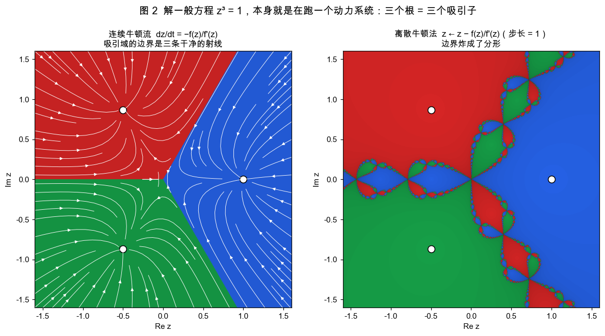
- 左图（连续牛顿流）：吸引域是三个 120° 的扇形，边界是三条干净的射线。
- 右图（离散牛顿法，步长 = 1）：边界炸成了分形。在边界附近，初值差一点点，就会被完全不同的根吸走。
两张图是同一个动力系统，唯一的区别是步长。步长太大，就会冲过头、来回跳，把原本光滑的边界撕碎。 这个"步长太大就出事"的现象，§9 会给出精确的代数条件。它就是深度学习里"学习率太大就发散"。
梯度下降也是同一回事：w ← w − lr·∇L(w) 就是梯度流 w' = −∇L(w) 的欧拉法。
训练神经网络 = 数值求解一个微分方程，而它的平衡点是 ∇L(w) = 0 这个一般方程的根。
3. 判别式 → 分岔
中学学 y² + r = 0：判别式 Δ = −4r。
r < 0：两个实根r = 0：一个重根r > 0：没有实根
在一般方程里，这只是"根的个数"。在微分方程 y' = r + y² 里，这是系统的命运：
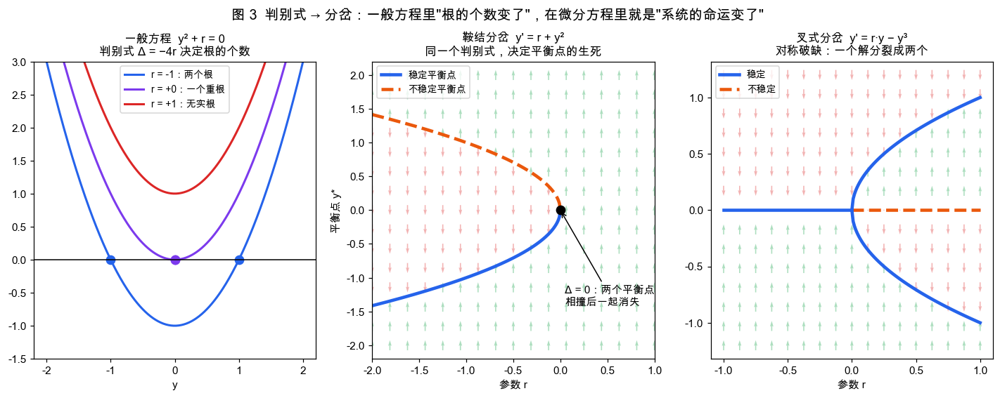
- 中图（鞍结分岔）：
r < 0时有一稳定（蓝实线）一不稳定（橙虚线）两个平衡点；r增大到 0，两个平衡点相撞、湮灭；r > 0时没有任何平衡点，y 一路冲向无穷。 背景的绿/红小箭头就是y'的正负，和 §1 的相线是同一种东西。 - 右图（叉式分岔）：
y' = r·y − y³。平衡点方程y(r − y²) = 0：r < 0只有一个根y = 0且稳定；r > 0时y = 0变得不稳定，同时长出±√r两个新的稳定根。 对称破缺：系统必须在左右之间"选边"。
import numpy as np
for r in [-1.0, -0.25, 0.0, 0.25, 1.0]:
roots = np.roots([1, 0, r]) # y² + r = 0
real = sorted(x.real for x in roots if abs(x.imag) < 1e-12)
stab = ["稳定" if 2 * y < 0 else ("临界" if y == 0 else "不稳定") for y in real] # f'(y) = 2y
print(f"r={r:+.2f} Δ={-4*r:+.2f} 平衡点={np.round(real, 3).tolist()} {stab}")
# r=-1.00 Δ=+4.00 平衡点=[-1.0, 1.0] ['稳定', '不稳定']
# r=+0.00 Δ=-0.00 平衡点=[0.0, 0.0] ['临界', '临界']
# r=+1.00 Δ=-4.00 平衡点=[] []
现实中的"临界点"几乎都是分岔：
- 压一根细杆，压力超过临界值的瞬间，它突然弯向左边或右边（叉式分岔）
- 神经元的膜电位超过阈值，突然开始放电（鞍结分岔）
- 湖泊的营养物质超过某个值，突然从清澈跳到浑浊，而且回不去（两个鞍结分岔构成的滞回）
判别式等于零的那一刻，就是系统"质变"的那一刻。
4. Ax = b → x' = Ax：从一个解到一整张相图
线性方程组 Ax = b：只要 det(A) ≠ 0，就有唯一解 x = A⁻¹b。一个点，没什么可画的。
线性微分方程组 x' = Ax：原点永远是平衡点（它是 Ax = 0 的解），
但原点附近的流却有六种截然不同的样子，而决定这一切的只有 A 的特征值：
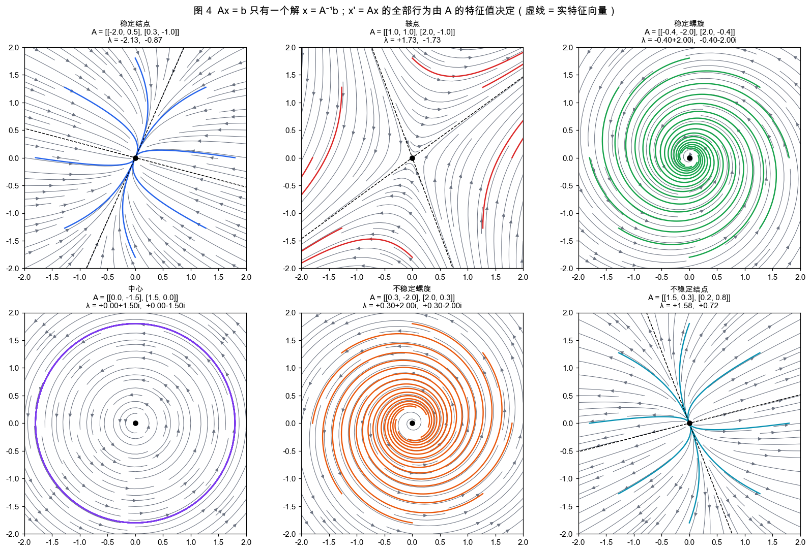
为什么是特征值？因为沿特征向量 v 方向，Av = λv，二维系统退化成了一维的 y' = λy，
解就是 e^{λt}。任意初值拆成特征向量的组合，每个分量各自独立地指数增长或衰减：
x(t) = c₁·e^{λ₁t}·v₁ + c₂·e^{λ₂t}·v₂
- 两个 λ 都是负实数 → 两个方向都收缩 → 稳定结点
- 一正一负 → 一个方向收缩一个方向拉伸 → 鞍点（图中虚线就是这两个方向）
- 共轭复数
a ± bi→e^{(a±bi)t} = e^{at}(cos bt ± i sin bt)→ 螺旋，a 的正负决定向内还是向外 - 纯虚数 → 中心，永远绕圈
import numpy as np
from scipy.linalg import expm
A = np.array([[-0.4, -2.0], [2.0, -0.4]]) # 稳定螺旋
x0 = np.array([1.8, 0.0])
lam, V = np.linalg.eig(A)
c = np.linalg.solve(V, x0) # 初值拆成特征向量的组合 —— 又是一个 Ax = b
t = 1.5
x_eig = (V @ (c * np.exp(lam * t))).real # Σ cᵢ e^{λᵢt} vᵢ
x_expm = expm(A * t) @ x0 # 矩阵指数，标准答案
print(lam) # [-0.4+2.j -0.4-2.j]
print(x_eig, x_expm) # 两者一致
还有一个很妙的联系：Ax = b 的解，是微分方程 x' = b − Ax 的平衡点。
如果 A 的特征值实部都为正（比如对称正定矩阵），这个流就稳定，从任意初值出发都会流向 A⁻¹b。
用欧拉法离散它，就得到了求解大型线性方程组的迭代法（Richardson 迭代，是 Jacobi、共轭梯度这一族方法的起点）。
解线性方程组和解线性微分方程，是同一件事的静态版和动态版。
5. 韦达定理画出的"命运地图"
二阶矩阵的特征值满足特征方程：
λ² − τ·λ + Δ = 0, τ = trace(A), Δ = det(A)
这就是一个一元二次方程。中学的两件武器直接派上用场：
- 韦达定理：
λ₁ + λ₂ = τ，λ₁·λ₂ = Δ - 判别式：
τ² − 4Δ的正负决定两根是实数还是共轭复数
于是只看 A 的迹和行列式这两个数，不用解任何东西，就能知道系统的全部命运：
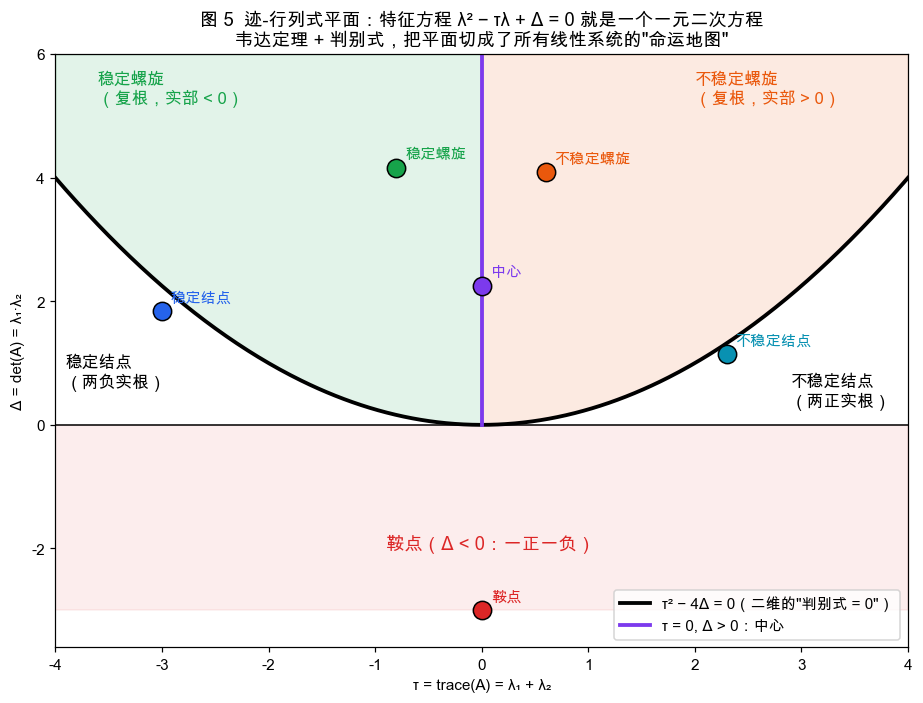
| 条件 | 韦达定理翻译 | 相图 |
|---|---|---|
Δ < 0 |
两根乘积为负 → 一正一负 | 鞍点 |
Δ > 0, τ² > 4Δ, τ < 0 |
两实根、同号、和为负 → 都是负的 | 稳定结点 |
Δ > 0, τ² < 4Δ, τ < 0 |
共轭复根，实部 τ/2 < 0 |
稳定螺旋 |
Δ > 0, τ = 0 |
纯虚根 | 中心 |
τ² = 4Δ（抛物线） |
重根 | 结点与螺旋的分界 |
图中那条抛物线 τ² = 4Δ，就是"判别式 = 0"在二维上的样子。
图 4 的六个例子，在这张图上各占一格。
这张图在工程里非常常用。比如设计一个控制器，本质就是调参数，
把系统在 (τ, Δ) 平面上的点挪到左上方的绿色区域（稳定且衰减得足够快）。
6. 一元二次方程的复根，就是振动
阻尼弹簧 y'' + 2ζω·y' + ω²·y = 0。猜 y = e^{λt}，求导变成乘 λ，得到特征方程：
λ² + 2ζω·λ + ω² = 0, 判别式 = 4ω²(ζ² − 1)
让阻尼系数 ζ 从 0 慢慢增大，看两个根在复平面上怎么走，以及对应的运动怎么变：
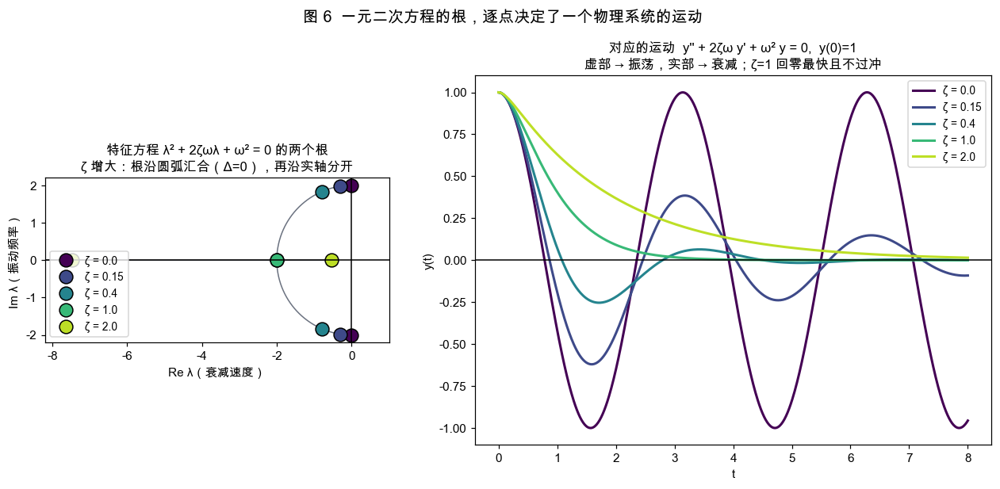
ζ = 0：根在虚轴上±2i→ 永不衰减的正弦振动0 < ζ < 1：根沿着半径为 ω 的圆弧向左移动 → 振幅越来越快地衰减ζ = 1：两根在实轴上相遇（判别式 = 0）→ 临界阻尼，回零最快且不过冲。汽车减震器、电表指针都按这个设计ζ > 1：两根沿实轴分开，一个跑向左边，一个靠向原点 → 过阻尼。靠近原点的那个根衰减很慢，所以反而回得更慢
一个根 λ = a + bi 直接读出运动：虚部 b 是角频率，实部 a 是衰减率。 用代码验证：
import numpy as np
from scipy.integrate import solve_ivp
from scipy.signal import find_peaks
w, zeta = 2.0, 0.15
lam = np.roots([1, 2 * zeta * w, w * w])[0]
print(f"特征根 λ = {lam:.4f}") # -0.3000+1.9774j
t = np.linspace(0, 30, 30001)
y = solve_ivp(lambda t, s: [s[1], -2*zeta*w*s[1] - w*w*s[0]], (0, 30), [1, 0],
t_eval=t, rtol=1e-10).y[0]
pk, _ = find_peaks(y)
period = np.mean(np.diff(t[pk]))
decay = np.log(y[pk[0]] / y[pk[1]]) / (t[pk[1]] - t[pk[0]])
print(f"实测角频率 {2*np.pi/period:.4f} vs 虚部 {lam.imag:.4f}")
print(f"实测衰减率 {-decay:.4f} vs 实部 {lam.real:.4f}")
# 实测角频率 1.9775 vs 虚部 1.9774
# 实测衰减率 -0.3001 vs 实部 -0.3000
中学时觉得"虚数根没有意义"，其实它是这个方程里最有意义的量：振动频率。 示波器上看到的每一段衰减正弦波，背后都是一对共轭复根。
7. 非线性方程：守恒量把它压回一条代数曲线
到这里都是线性方程。非线性方程绝大多数没有公式解，比如单摆：
θ'' = −sin θ
θ(t) 写不成初等函数（需要椭圆函数）。但有一条捷径：能量守恒。
两边乘 θ' 再积分，得到：
H(θ, ω) = ω²/2 − cos θ = E（常数）
这是一个不含导数的一般方程。它说明：每条轨迹都躺在一条代数曲线 H = E 上。
虽然解不出 θ(t)，但把 H(θ, ω) = E 的等高线一画，相图就出来了：
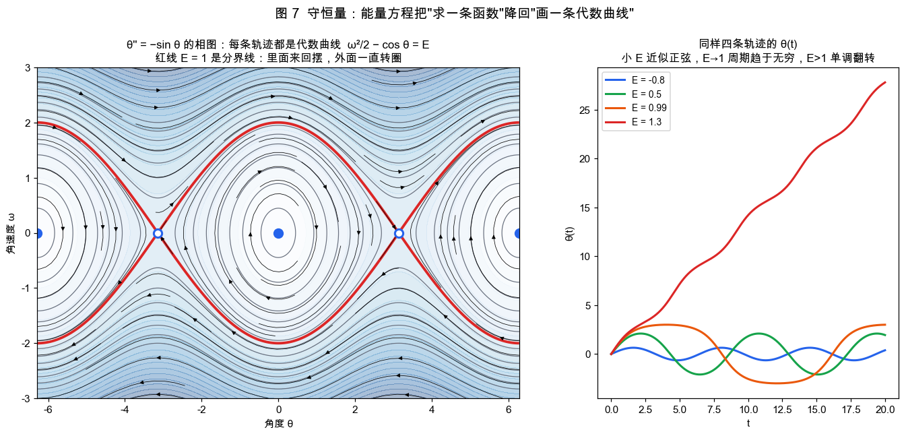
E < 1：闭合曲线 → 来回摆动E > 1：上下两条波浪线 → 一直往一个方向转圈E = 1（红线）：分界线，摆恰好能到达最高点，但要花无穷长的时间。所以右图橙色曲线（E = 0.99）的周期被拉得很长
平衡点在哪、稳不稳定，照样是 §1、§4 的套路：平衡点是 ω = 0, sin θ = 0 这组一般方程的根；
稳定性看平衡点处线性化矩阵（雅可比矩阵）的特征值：
import numpy as np
from scipy.integrate import solve_ivp
for th in [0, np.pi]:
J = np.array([[0, 1], [-np.cos(th), 0]]) # θ' = ω, ω' = −sin θ 的雅可比矩阵
print(f"θ*={th:.2f} λ = {np.linalg.eigvals(J)}")
# θ*=0.00 λ = [0.+1.j 0.-1.j] 纯虚根 → 中心（下垂：来回摆）
# θ*=3.14 λ = [ 1. -1.] 一正一负 → 鞍点（倒立：一碰就倒）
sol = solve_ivp(lambda t, s: [s[1], -np.sin(s[0])], (0, 50), [0, 1.5], rtol=1e-11, atol=1e-11)
H = sol.y[1]**2 / 2 - np.cos(sol.y[0])
print(f"H 的波动幅度：{H.max() - H.min():.2e}") # ~1e-10：轨迹始终在同一条代数曲线上
下面这个动画更直观。在相空间里放两团初值，让它们随流运动：
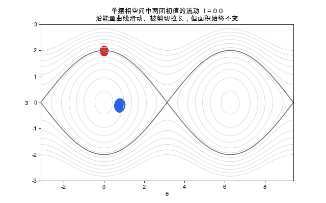
每个点都沿着自己那条能量曲线滑动。因为不同能量的曲线转得快慢不同，团块被剪切、拉长成细丝， 但它的面积始终不变（刘维尔定理，哈密顿系统的特征）。蓝团在分界线内，永远被困在"摆动区"； 红团跨在分界线附近，一部分转圈，一部分往回摆，被撕成一条长带。
守恒量是从微分方程回到一般方程的第二条路。 行星轨道是椭圆（开普勒第一定律）， 就是因为能量和角动量两个守恒量把二体问题压成了一条二次曲线。
8. 一般方程里没有的现象：解会"跑掉"，也会"分叉"
微分方程并不只是"一般方程的动态版"。有两件事，在一般方程里完全没有对应物。
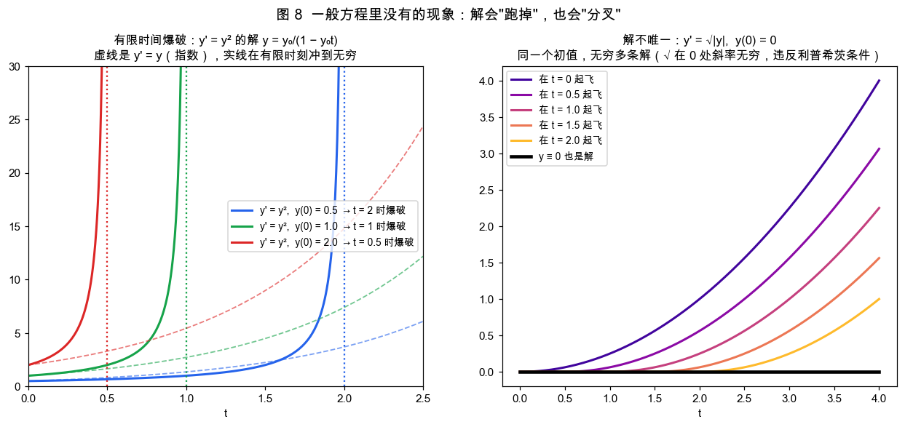
有限时间爆破。 y' = y 的解是指数，涨得快，但任何有限时刻都是有限值。
y' = y² 只比它多了一个平方，解却是：
y(t) = y₀ / (1 − y₀·t)
分母在 t = 1/y₀ 时等于零，解在有限时间内冲到无穷。
有意思的是，爆破时刻本身又是一个一般方程 1 − y₀·t = 0 的根，也就是解析解的极点。
燃烧、引力坍缩、某些化学反应失控，数学上都是这个形状。
解不唯一。 y' = √|y|, y(0) = 0：y ≡ 0 是解；y = t²/4 也是解；
"先静止一段、在任意时刻 c 起飞"的 y = (t − c)²/4 还是解。同一个初值，无穷多条解。
一般方程的根数由代数基本定理管着（n 次方程有 n 个复根）。
微分方程的解由皮卡-林德勒夫定理管着：只要 f 满足利普希茨条件（斜率有界），初值问题就有唯一解。
√|y| 在 0 处斜率无穷，条件被打破，唯一性就没了。
正是因为这条定理，"给定现在，未来唯一确定"（牛顿力学的决定论）才在数学上站得住。
9. 把微分方程离散成一般方程是有代价的：学习率为什么不能超过 2/λ
计算机只能做代数运算。欧拉法把 y' = λy 变成：
y_{n+1} = y_n + h·λ·y_n = (1 + hλ)·y_n
这是一个等比数列，公比 q = 1 + hλ。中学知识：等比数列收敛当且仅当 |q| < 1。于是：
欧拉法稳定 ⟺ |1 + hλ| < 1
对 λ < 0 的实数，这就是 h < 2/|λ|。一个一元一次不等式。
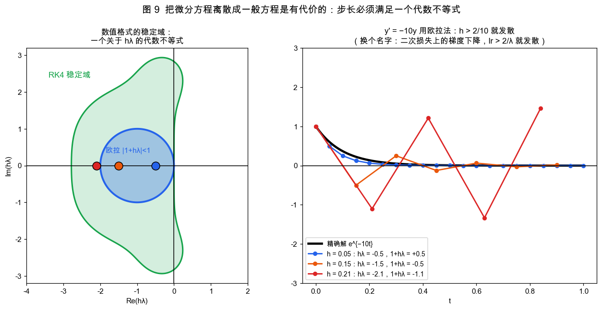
右图：y' = −10y，真实解平滑衰减。
h = 0.05（1 + hλ = 0.5）：稳定，跟得上真实解h = 0.15（1 + hλ = −0.5）：还能收敛，但每步正负翻转，出现了原方程根本没有的振荡h = 0.21（1 + hλ = −1.1）：发散
现在把名字换一下。二次损失 L(w) = λw²/2 上的梯度下降：
w ← w − lr·λ·w = (1 − lr·λ)·w
和欧拉法是同一个式子。 所以学习率必须满足 lr < 2/λ_max，
其中 λ_max 是损失函数海森矩阵的最大特征值（最陡方向的曲率）。
训练时 loss 突然爆成 NaN，最常见的原因就是这个不等式被打破了。
import numpy as np
lam = 10.0
for lr in [0.05, 0.15, 0.199, 0.21]:
w = 1.0
for _ in range(100):
w = w - lr * lam * w # 梯度下降 = 欧拉法
print(f"lr={lr:<6} |1 − lr·λ|={abs(1 - lr*lam):.3f} 100 步后 w = {w:.3e}")
# lr=0.05 |1 − lr·λ|=0.500 100 步后 w = 7.889e-31
# lr=0.15 |1 − lr·λ|=0.500 100 步后 w = 7.889e-31
# lr=0.199 |1 − lr·λ|=0.990 100 步后 w = 3.660e-01
# lr=0.21 |1 − lr·λ|=1.100 100 步后 w = 1.378e+04
左图的蓝色圆盘是欧拉法的稳定域 |1 + z| < 1，绿色区域是 RK4 的稳定域，
它是 |1 + z + z²/2 + z³/6 + z⁴/24| < 1，又一个多项式不等式。
高阶方法的稳定域更大，允许更大的步长。
还有一个出路：隐式欧拉 y_{n+1} = y_n + h·f(y_{n+1})。对线性方程，它给出 y_{n+1} = y_n / (1 − hλ)，
对任何 h > 0、任何 Re λ < 0 都稳定。代价是 y_{n+1} 出现在等号两边，
对非线性方程，每走一步都要解一个一般方程，通常用牛顿法。
这样绕了一圈又回来了：解微分方程要反复解一般方程，而解一般方程（§2）本身又是在跑一个微分方程。
10. 代数的尽头：混沌
前面每一节，最后都能落回某个一般方程：平衡点、特征值、判别式、守恒量、稳定性不等式。 三维以上的非线性系统，这条路会走到头。
洛伦兹 1963 年研究大气对流时写下了三个方程：
x' = 10(y − x)
y' = x(28 − z) − y
z' = xy − (8/3)z
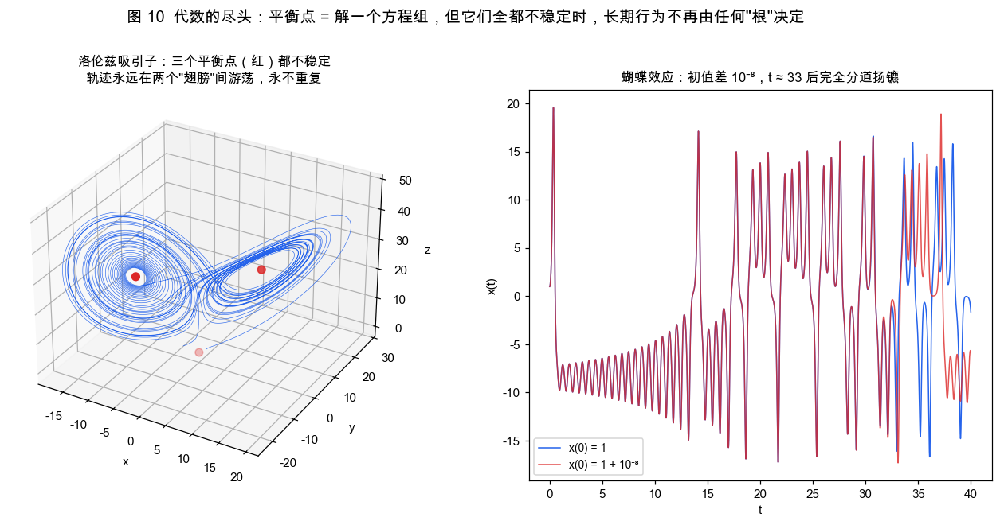
代数还能做的事：解出三个平衡点，算出每个点的雅可比特征值。
import numpy as np
s, r, b = 10, 28, 8/3
c = np.sqrt(b * (r - 1))
for p in [(0, 0, 0), (c, c, r - 1), (-c, -c, r - 1)]:
x, y, z = p
J = np.array([[-s, s, 0], [r - z, -1, -x], [y, x, -b]])
lam = np.linalg.eigvals(J)
print(np.round(p, 2), np.round(lam, 3), "不稳定" if np.any(lam.real > 0) else "稳定")
# [0. 0. 0.] [-22.828 11.828 -2.667] 不稳定
# [ 8.49 8.49 27. ] [-13.855+0.j 0.094+10.195j 0.094-10.195j] 不稳定
# [-8.49 -8.49 27. ] [-13.855+0.j 0.094+10.195j 0.094-10.195j] 不稳定
三个平衡点全都不稳定，轨迹哪个也停不下来。它在两个"翅膀"之间无休止地游荡，永不重复，也不跑向无穷。
右图两条轨迹的初值只差 10⁻⁸，前 30 个时间单位几乎重合，之后完全分道扬镳（蝴蝶效应）。
这时"根"已经没法告诉你系统的长期行为了。庞加莱-本迪克松定理说二维自治系统不可能混沌， 所以混沌至少要三维。一般方程能告诉你系统在哪里停不下来，却说不清它在停不下来时会做什么。 天气预报只能准一两周，原因就在这里。
11. 总结：一张对照表
| 维度 | 一般方程 f(x) = 0 |
微分方程 x' = f(x) |
两者的桥 |
|---|---|---|---|
| 用到 f 的什么 | 只有零点 | 每一点的值和方向 | 零点 = 平衡点 |
| 解的数量 | 有限个（代数基本定理） | 每个初值一条（皮卡定理） | 利普希茨条件 |
| 根的"好坏" | 单根、重根 | 稳定、不稳定、临界 | f'(x*) 的符号 / 雅可比特征值 |
| 参数变化 | 判别式变号，根数改变 | 分岔，命运改变 | 判别式 = 0 ⟺ 分岔点 |
| 线性情形 | Ax = b，一个点 |
x' = Ax，六种相图 |
特征方程、迹-行列式平面 |
| 复数根 | "无实根" | 振动（虚部 = 频率） | 欧拉公式 e^{iθ} |
| 求解方法 | 牛顿迭代 | 欧拉、RK4、隐式法 | 牛顿法 = 牛顿流的欧拉步 |
| 数值稳定 | 迭代步长选错会跳出分形 | |1 + hλ| < 1 |
学习率 < 2/λ_max |
| 非线性的出路 | 数值求根 | 守恒量、线性化、相图 | H(x, y) = E 是代数曲线 |
| 极限 | 五次以上无根式解 | 三维以上可以混沌 | 代数只能描述平衡，描述不了游荡 |
结语
回到开头那句话：一般方程只用了函数的零点，微分方程用了它的每一个值。
所以微分方程并没有把中学数学推翻重来，而是把它读得更完整：
- 根变成了终点，根处的斜率变成了稳定性
- 判别式变成了临界点，复数根变成了振动
Ax = b变成了相图，韦达定理变成了分类地图- 牛顿迭代变成了流，等比数列的收敛条件变成了学习率上限
反过来，每当真正动手解一个微分方程（找平衡点、算特征值、守恒量降维、数值离散）， 最后都会落回一个一般方程。两者一直在互相换位置。
写给做 AI 的读者：训练 = 沿梯度流
w' = −∇L前进，收敛点 =∇L = 0的根， 学习率上限 = 欧拉法的稳定域，loss 曲线上的振荡 =1 − lr·λ < 0的"负公比"， 残差网络x + f(x)= 欧拉步，扩散模型的采样 = 反向求解一个随机微分方程。 这篇文章里的十张图，每一张在训练日志里都有对应。
🎬 复现
pip install numpy scipy matplotlib pillow
python scripts/equations_to_ode_visualization.py # 输出到 images/diffeq/，约 40 秒